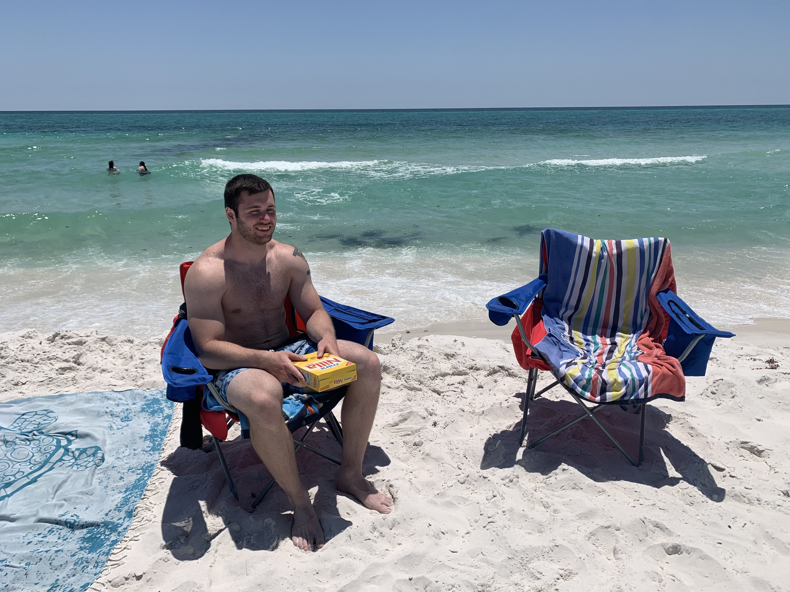
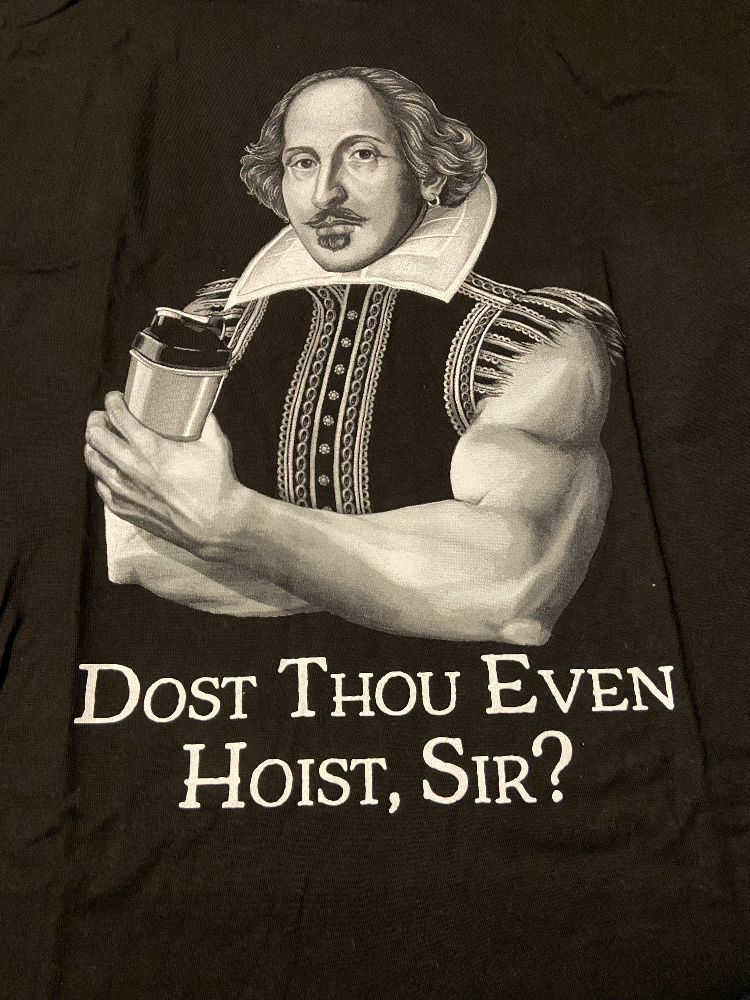

by John Doligale 5th

People have told me that some of my favorite things to do are not common to in the realm of computer scientist,
but I encourage everyone
to pursue their hobbies whenever they can. For me, One of my favorite things to do is to go out to some body of water and go fishing!
There is nothing more relaxing then listening to the waves of the water and being blessed with a fish on the end of the hook. When the
weather doesn't permit though, I do enjoy being inside away from the south's intense humidity and playing some video games on my
PS5. I mainly enjoy first-person shooters, action-adventures, and even racing games.
Here are my top 5 favorite games!
 However, I can't be a couch potato all the time. I do enjoy working out at the local gym and stength training, and going on "adventure-walks" (as I call them). Being active helps me stay dsiciplined and focused, and like video games, it gives me a break from the real world for a short period of time. And of course I do anjoy working on programming projects here and there when an idea comes to mind. Programming really challenges my brain to think creatively and concentrate on a goal. Which is the main reason I chose this major! Some other basic things about me is that I really enjoy super hero movies like Marvel, DC, etc. However, my favorite movie of all time is actually Happy Gilmore! It was one of the first movies I watched growing up, and I just think it never loses its touch of humor. If you've never heard of it or seen it the link will be down below to check it out and I highly reccomend it for a good laugh. Something else that I have been watching ever since I was a kid, anime! Waking up early in the morning before I got on the weary school bus, I would put on cartoon network (way too loud) and watch Dragon Ball Z at 6:30am while eatingv my bowl of Raisin Bran. I would sing along to the awesome intro, and be totally drastracted. Sometimes so badly that I missed the bus over it! From there, I started watching other popular anime like: Death Note, Fairy Tail, Hunter x Hunter, Bleach, Attack on Titan, and so many more. Dragon Ball Z is still my favorite series though.